Jo Dean Sarins, metal artist, enamelist and lapidarist in White Salmon, Washington
Unique hand made jewelry
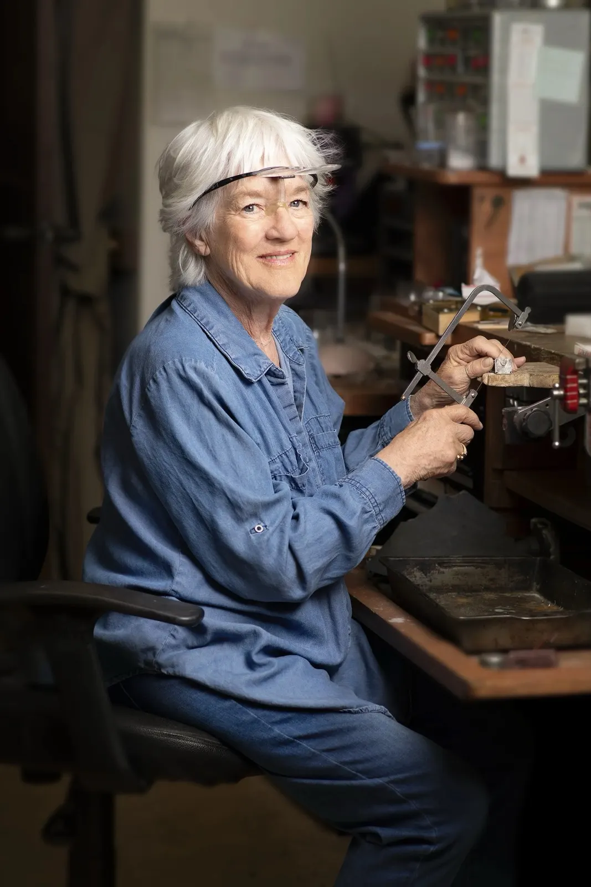
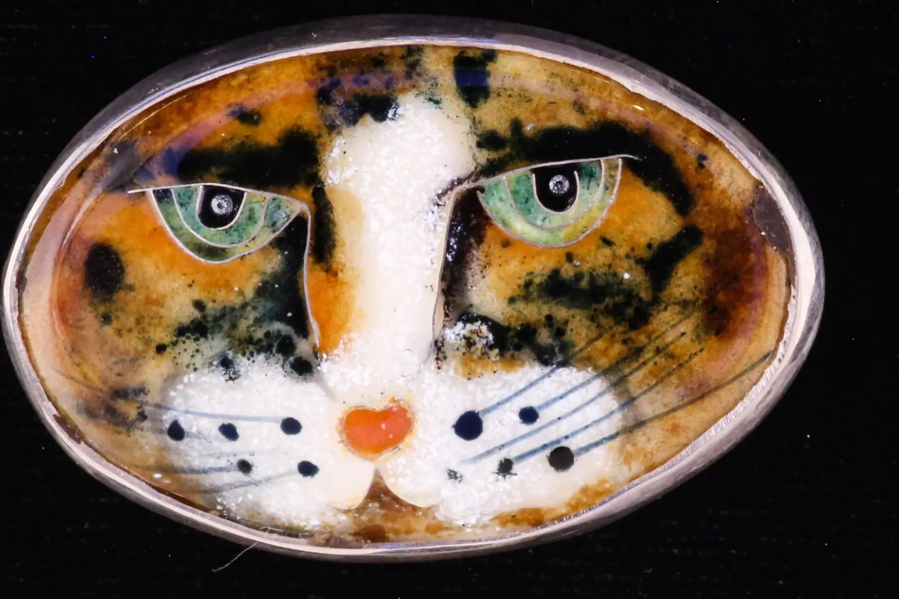
My enameled works are small pieces of abstract art or larger cloisonné pieces. Each is fabricated by hand, one-of-a-kind, and set in gold or sterling silver as wearable art.
- Cloisonné on fine silver, set in sterling
- Vintage turquoise, stones over 20 years up to 100 years
- Signed with my maker’s mark, an Afghan dog
- Three galleries in Washington carry my work
Enamel, silver and stone
Cloisonné animals, enamels, turquoise and lapidary work, each one-of-a-kind. The pieces are for sale in the shop on my site.
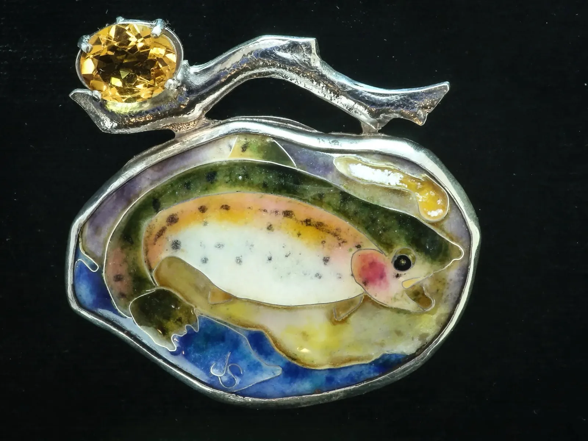
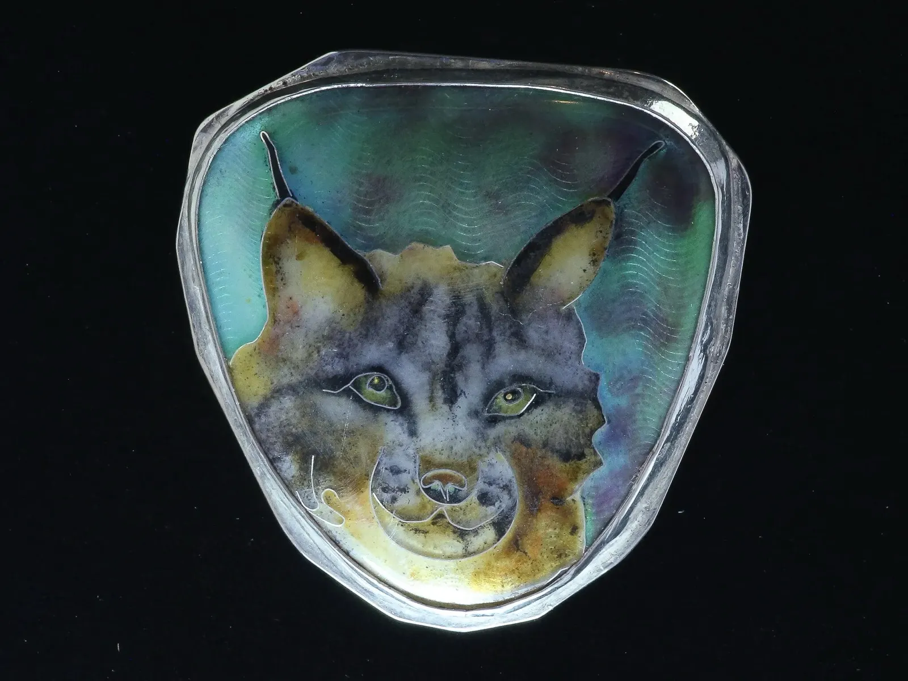
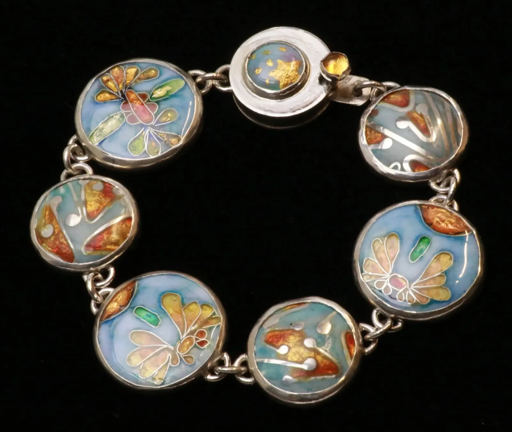
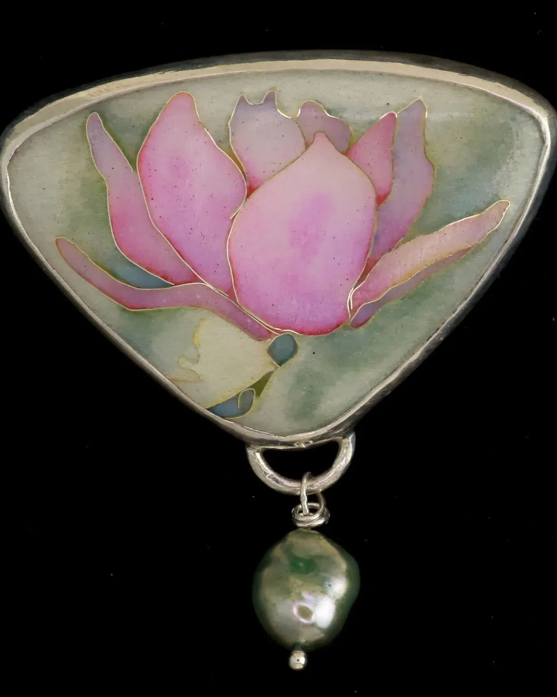
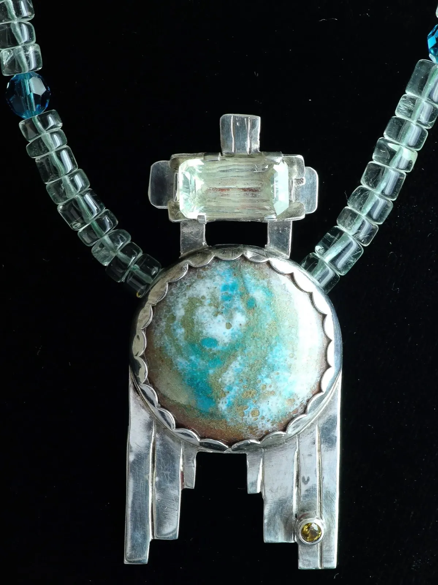
How to buy a piece
Open the shop, pick a category, then add the piece to your cart. A question, or a special order? Write or call me.
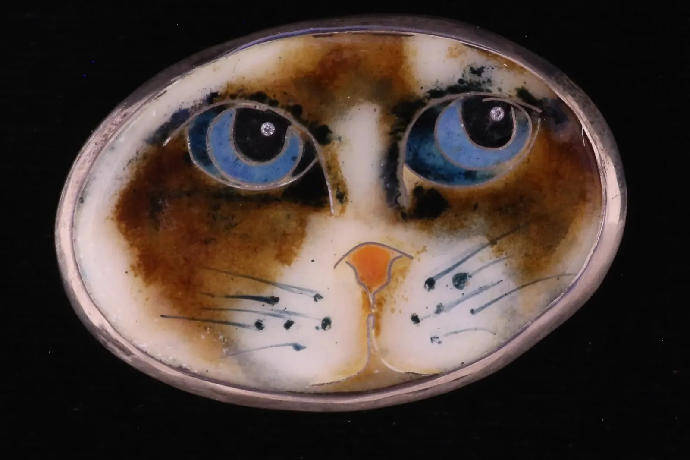
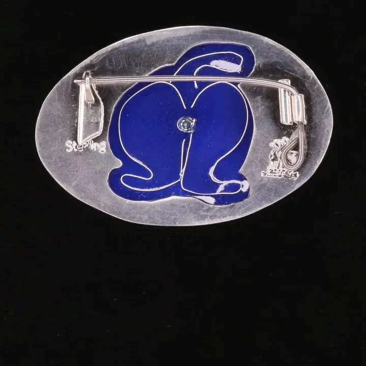
Cat-As Jewelry
Fine silver cloisonné enamel of just a sweet kitty’s beautiful eyes and nose, set in sterling silver as a brooch. Flip her over and her Cat-As has a CZ under her enameled tail.
“If you want a personalized kitty, I can do that too!!”
“Then I took a jewelry class. I was Hooked!!”
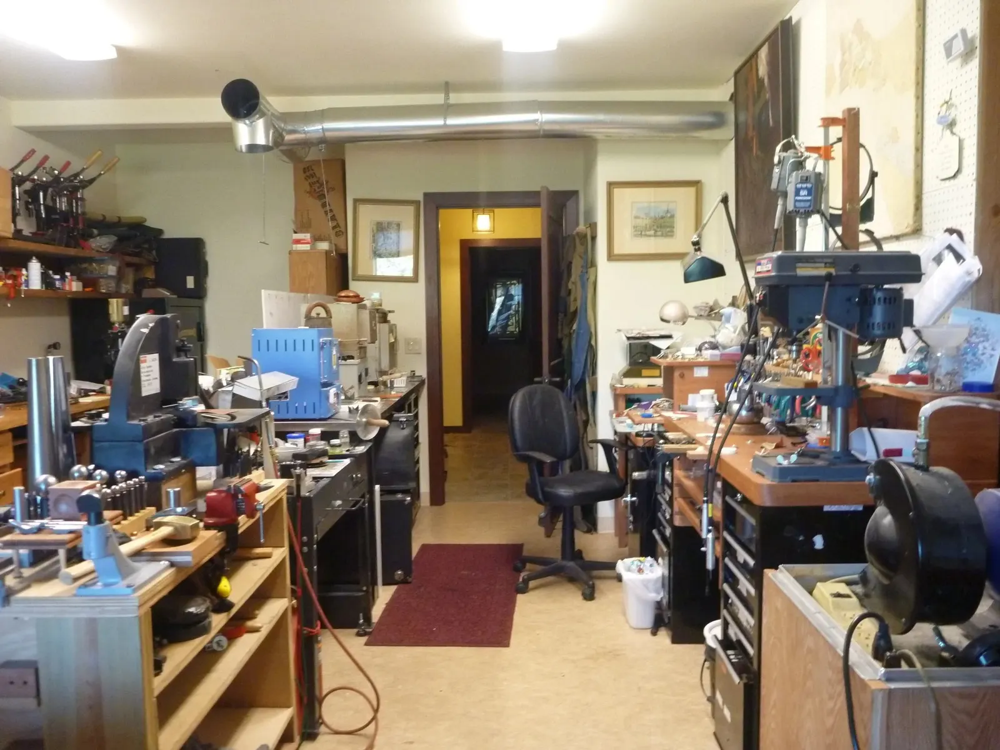
I have always been interested in creating art. Since college I have worked with china paints, ceramics, watercolors, acrylics and oils, painted in a folk art style from the early 1970’s through the 1980’s, taught acrylic painting at a junior college and showed at juried art shows.
My love of jewelry started with collecting Swarovski pins, then vintage jewelry. I enjoyed restoring those pieces so much, and the collection grew so large, that I started my own business, Array Of Elegance, selling in antique stores.
I took all the jewelry classes offered at the Peoria Art Guild, one of which was enameling: the fusing of vitreous glass to a metal surface, either gold, silver or copper. It combines science and art, which works well for me, with a masters degree in science and a love of working with my hands.
Today my style is changing. I still love the glitz, I still add sparkly gems to my jewelry, however I am going smaller. My next challenge is honing my cloisonné skills.
Signed with an Afghan dog
All pieces are signed and authenticated with my maker’s mark, guaranteeing that you have purchased an original piece of my art jewelry.
Years ago, a psychic reader foretold of a woman wearing a feather boa and leading an Afghan dog. As we left, I whispered to Mom that the man I had just started dating owned two Erte serigraphs of exactly that woman. I married the man, Juris. The psychic was right!
Later, I had an Afghan dog tattooed on my ankle, and it became the mark on my jewelry.
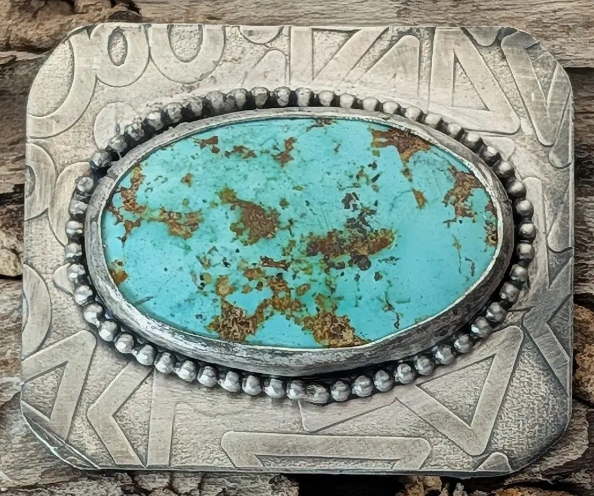
Vintage turquoise
Like this pendant: hand cut from a turquoise nodule, a natural cabochon set in textured sterling silver. Vintage refers to stones over 20 years, up to 100 years.
Galleries I can be found at
Where to see the work in person.
Maryhill Museum
35 Maryhill Dr.
Goldendale, WA 98620
Carson Art Garage
962 Wind River Road
Carson, Washington
Columbia Gorge Museum
990 SW Rock Creek Drive
Stevenson, WA
Have a question? Get in touch.
Thanks for taking the time to contact me! I do my best to respond quickly, but it could take 1 to 2 business days to get back to you.
- Call309-657-2180
- Emailarrayofelegance@att.net
- Address15 Osborne Road, White Salmon, WA 98672